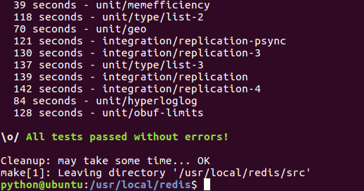

Redis 环境安装
安装
如果已经安装了老版本3.0.6
1. 卸载软件
sudo apt-get remove redis-server
2. 清除配置
sudo apt-get remove --purge redis-server
3. 删除残留文件
sudo find / -name redis
一般设置如下
sudo rm -rf var/lib/redis/
sudo rm -rf /var/log/redis
sudo rm -rf /etc/redis/
sudo rm -rf /usr/bin/redis-*
sudo rm -rf /usr/local/bin/redis-*
sudo rm -rf /usr/local/redis/
下载地址：http://redis.io/download ，下载最新文档版本，稳定版系列.
- 下载安装文件
wget http://download.redis.io/releases/redis-3.2.3.tar.gz - 解压
tar -zxvf redis-3.2.3.tar.gz - copy文件并ls查看
sudo mkdir -p /usr/local/redis/ sudo cp -r redis-3.2.3/* /usr/local/redis/ ls /usr/local/redis/ - 进入安装目录
cd /usr/local/redis/ 编译
首先打开
README.md，翻阅基本build和install方式。vi README.md sudo make尝试环境是否可以正常使用(Hint: It's a good idea to run 'make test' ;)
sudo make test如果出现
\o/ All tests passed without errors!
表示redis环境没有问题。
安装 最后安装路径
cd src sudo make install查看编译好的命令文件
ls /usr/local/bin/redis-* --/usr/local/bin/redis-benchmark 性能测试工具,例如：redis-benchmark -n 1000000 -c 50 , 50个客户端，并发1000000个SETs/GETs查询 --/usr/local/bin/redis-check-aof 更新日志检查 --/usr/local/bin/redis-check-dump 本地数据文件检查 --/usr/local/bin/redis-cli 命令行操作工具 --/usr/local/bin/redis-server 服务器程序修改配置文件
cd .. sudo mkdir /etc/redis sudo cp redis.conf /etc/redis/ ls /etc/redis/redis.conf启动redis
python@ubuntu:~$sudo redis-server /etc/redis/redis.conf出现以下代表启动成功
python@ubuntu:~$ redis-sever /etc/redis/redis.conf 未找到 'redis-sever' 命令，您要输入的是否是： 命令 'redis-server' 来自于包 'redis-server' (universe) redis-sever：未找到命令 python@ubuntu:~$ redis-server /etc/redis/redis.conf 23003:M 17 Sep 10:52:57.535 * Increased maximum number of open files to 10032 (it was originally set to 1024). _._ _.-``__ ''-._ _.-`` `. `_. ''-._ Redis 3.2.3 (00000000/0) 64 bit .-`` .-```. ```\/ _.,_ ''-._ ( ' , .-` | `, ) Running in standalone mode |`-._`-...-` __...-.``-._|'` _.-'| Port: 6379 | `-._ `._ / _.-' | PID: 23003 `-._ `-._ `-./ _.-' _.-' |`-._`-._ `-.__.-' _.-'_.-'| | `-._`-._ _.-'_.-' | http://redis.io `-._ `-._`-.__.-'_.-' _.-' |`-._`-._ `-.__.-' _.-'_.-'| | `-._`-._ _.-'_.-' | `-._ `-._`-.__.-'_.-' _.-' `-._ `-.__.-' _.-' `-._ _.-' `-.__.-' 23003:M 17 Sep 10:52:57.536 # WARNING: The TCP backlog setting of 511 cannot be enforced because /proc/sys/net/core/somaxconn is set to the lower value of 128. 23003:M 17 Sep 10:52:57.537 # Server started, Redis version 3.2.3 23003:M 17 Sep 10:52:57.537 # WARNING overcommit_memory is set to 0! Background save may fail under low memory condition. To fix this issue add 'vm.overcommit_memory = 1' to /etc/sysctl.conf and then reboot or run the command 'sysctl vm.overcommit_memory=1' for this to take effect. 23003:M 17 Sep 10:52:57.537 # WARNING you have Transparent Huge Pages (THP) support enabled in your kernel. This will create latency and memory usage issues with Redis. To fix this issue run the command 'echo never > /sys/kernel/mm/transparent_hugepage/enabled' as root, and add it to your /etc/rc.local in order to retain the setting after a reboot. Redis must be restarted after THP is disabled. 23003:M 17 Sep 10:52:57.537 * The server is now ready to accept connections on port 6379
连接redis服务器
新开一个窗口，或者redis-server后台启动。
通过
$ redis-cli
得到
127.0.0.1:6379>
127.0.0.1:6379> ping
PONG
代表redis服务器已经正常安装并且可以使用了。